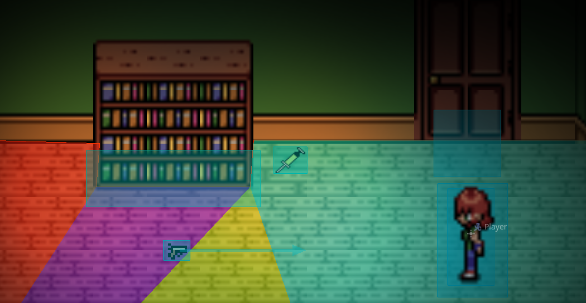

Blackout
Although just an early prototype, my game currently in development in the Godot Game Engine, Blackout, showcases a lot of what I can do in code using GDScript (Godot's built in language) and taking advantage of Godot's node based structure.

Modularity with Interacting
Blackout is meant to be a survival horror title like the classic Resident Evil titles which means there's a lot I can already do to make the game run well and modularize it.
The best example I can demonstrate is the root of these type of games, interactivity. For instance, picking up ammo or a health item, interacting with the environment for some flavor text, or even interacting with a door to go to the next area. Using a button to interact or inspect objects is one major part of making these games how they are and the key to making my game a lot more modular.
Each object type is a class like a door, an interactable object, and an item to pick up and put in the inventory. While not all derived from each other, they all share one thing in common, a function called "Interact". The chain will start with the player, who has an interactable area around them that checks for collision.
Whenever the player tries to interact with something and the function is called, the area will check for collision of interactable items. It will get the first item in the list and call that objects interact function.
Anything that is created from the interactable class will call a global script that will send a signal to the main scene tree and tell it to display the text given. The text given is an export variable which allows this class to be instanced and the variable changed to suit the specific object.
And an instance of the door class can send a signal to the main scene using the export variables to load a new scene and load specific player coordinates for spawn.
And with these being simple classes I can instance them and make creating the game so much easier. For example here is a test scene I created
There is a door and a bookcase. For the door just make a collideable area that when interacted with loads the specific scene and puts the player in the specified coordinates. For the bookcase just make an area that instances the interactable class and give it the proper flavor text.
Usable items are their own class that will be derived from and not just instanced. However, it still has the idea of modularity in mind
A different item may have a different effect when interacted with so it is passed on until it is specified. There is also the use function which is what the item will do when used and each item may have a different effect so it as well is passed on.
Item Display Functions
Items in the inventory are displayed in a 2x3 grid and there are two functions in place to help with the display of the items
Adding an item
Most likely when a player interacts with an item, it will be added to the inventory. The inventory is just a dictionary that is displayed by the game
Whenever an item is added, the addItem function is ran
- Step 1: A for loop is started to go through the dictionary
- Step 2: The for loop checks if the current slot is empty and if it is the item will then be added to the slot
- Step 3: If the slot it is in is taken but it shares the same name of the item being added, the for loop checks if the item is stackable and adds the item to that stack using its quantity if the item is stackable.
- Step 4: If there is no free slot, the for loop will print off "inventory full".
- The 7th slot is a unique slot and will always be taken by the lighter
- This inventory full will need to be changed in the future since it will run every time there is a non stackable item taking the current slot. However, this was still in testing and I have yet to implement what would happen when the inventory is full. It works as of now, but will cause many issues in the future when a full inventory state is fully implemented if not fixed.
Removing an item
When a player uses an item making the slot go free, there should be no empty slot in between items, only behind. This method runs a loop to make the items line up properly
This function uses the items index instead of the item itself
- Step 1: The used slot will be changed back to none
- Step 2: A for loop will start to go through the dictionary
- Step 3: The slot will be checked if its blank and if so then another for loop will activate
- Step 4: The loop will continue until finding a slot with an item in it thats in a higher slot than the item we checked to start this loop or until it hits the special 7th slot
- Step 5: If the loop hits slot 7, the loop will break out. If it finds an applicable item in a higher slot then it will change the lower slot to that item and the higher slot to no item.
This loop continues until it goes through the whole inventory. Basically it causes the inventory items after the blank to move up a slot, except for slot 7 due to that being reserved for the lighter.
If you are curious about the progress so far, although not much, here is footage of the very early prototype in action: Link